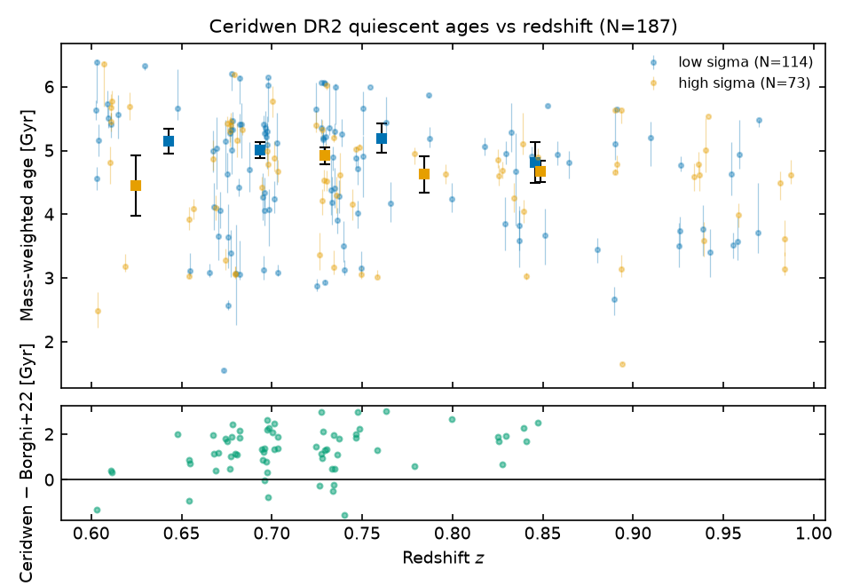
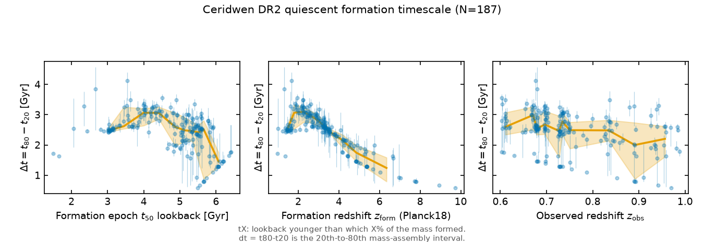
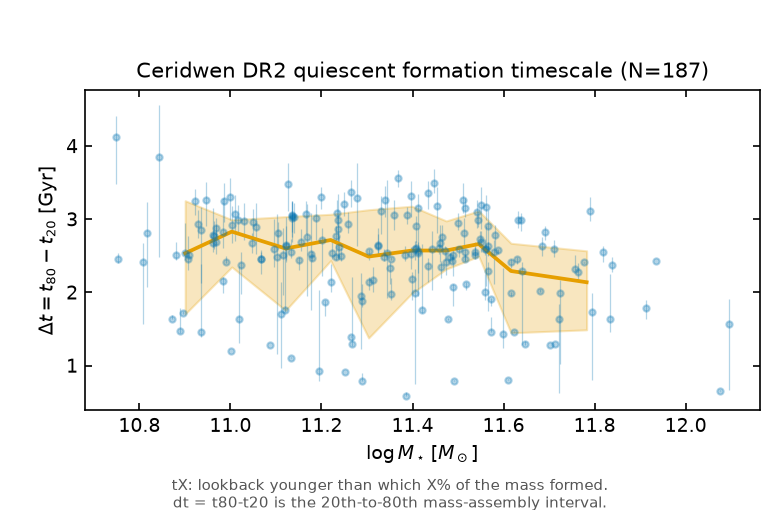
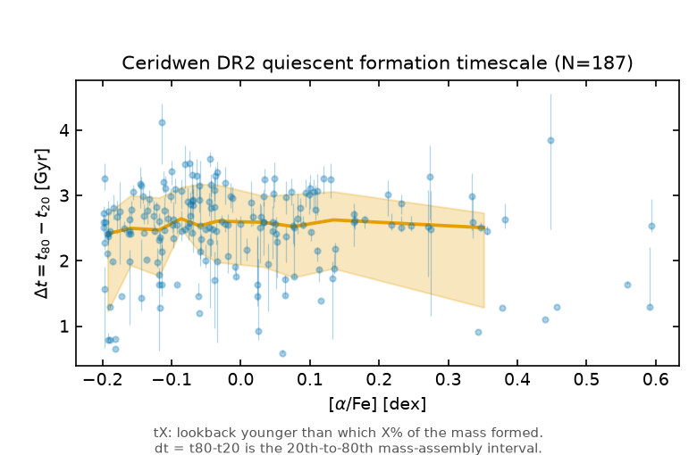
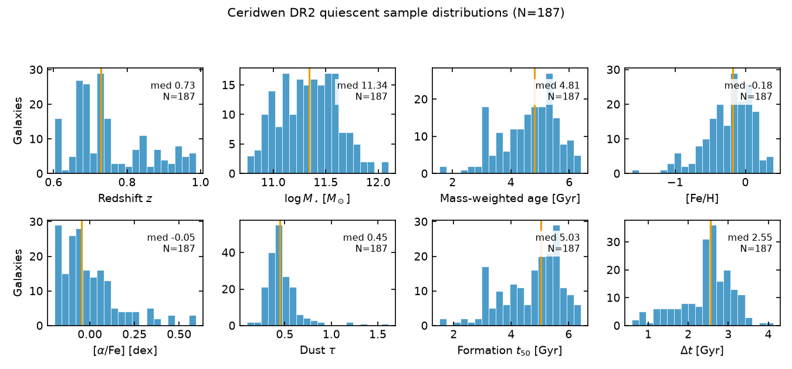
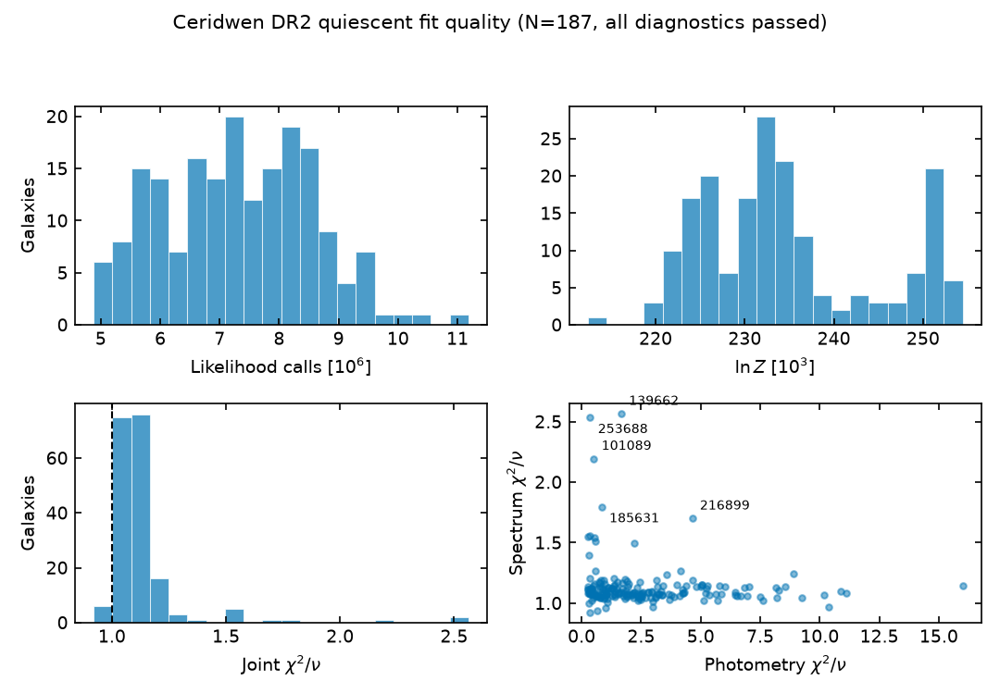

DR2 quiescent sample
Paper-quality figure set for the 187 LEGA-C DR2 quiescent full-spectrum Ceridwen fits: the age–redshift headline against Borghi+22, formation timescales, parameter distributions, and fit quality. Every plot renders from one tidy table, results/dr2-quiescent-summary.csv.
Headline: ages against redshift

headline-age-redshift.pdf.scripts/plot_dr2_headline_candidates.py:147-182 · layout_b_single_with_residual
Formation timescale
tX is the lookback younger than which X% of the formed mass was made; Δt = t80−t20 is the 20th-to-80th mass-assembly interval. Median Δt is 2.46 Gyr, flat against mass, [α/Fe] and observed redshift; 65% of values sit at 2.2–2.7 Gyr because the 7-bin SFH (2-Gyr bins at 1–5 Gyr) quantises Δt, so treat values as resolution-limited.



scripts/build_dr2_quiescent_summary.py:33-62 · formation_times; scripts/plot_dr2_formation_timescale.py
Distributions

scripts/plot_dr2_distributions_quality.py:48-72
Fit quality

scripts/plot_dr2_distributions_quality.py:74-108
Evidence
- Data:
results/dr2-quiescent-summary.csv(187 rows), built byscripts/build_dr2_quiescent_summary.pyfromresults/rtx-5060-dr2-quiescent-full-spectrum/*/ceridwen_{result,derived_outputs}.h5. - Figures:
wiki/analyses/dr2-quiescent-sample/(PNG + PDF). Superseded candidates A/C stay in the bridge reports folder; replaced chronometer figures are kept underwiki/analyses/_old/. - Tests:
tests/test_formation_times.py(burst/uniform limiting cases).